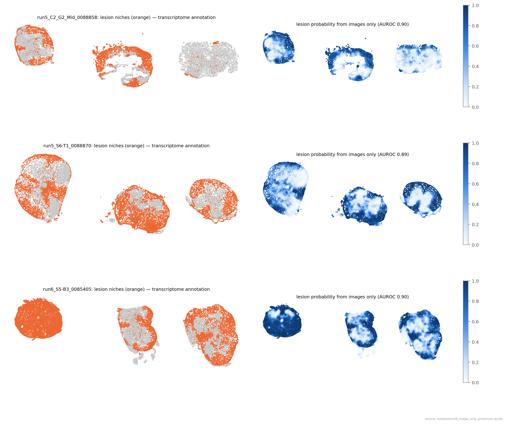
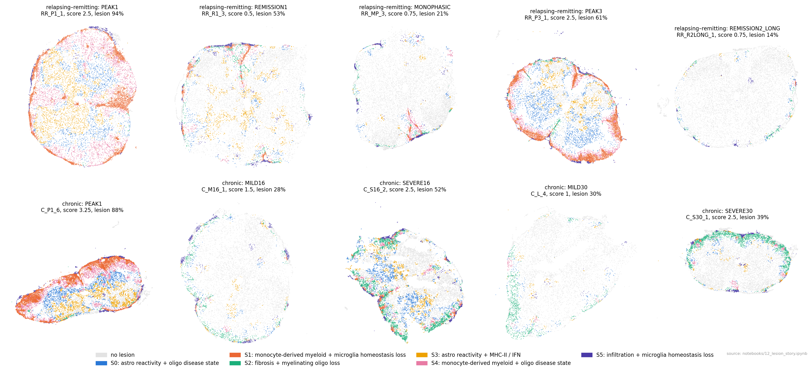
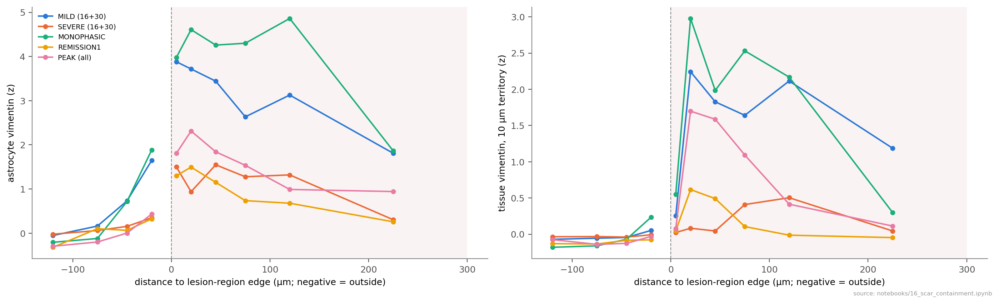
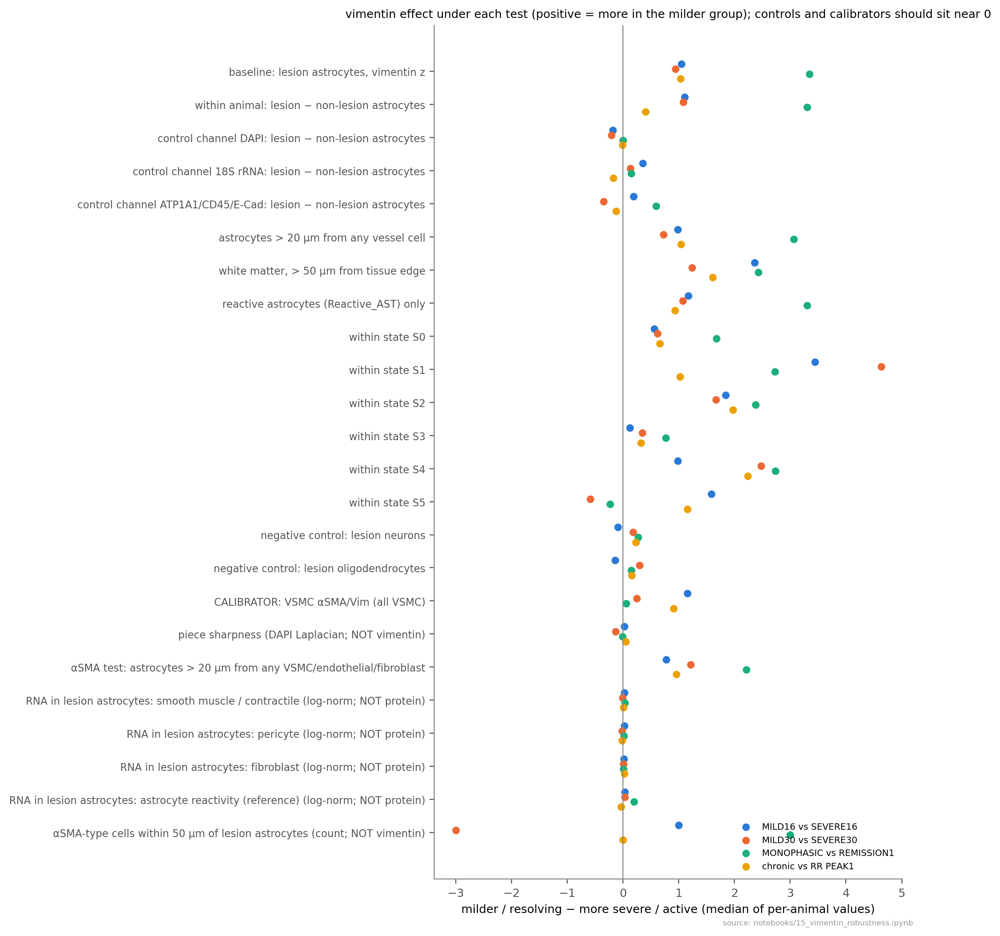
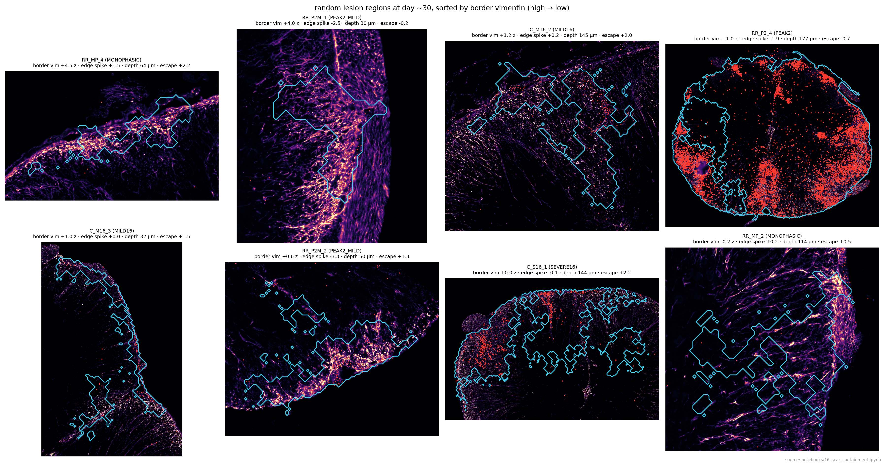
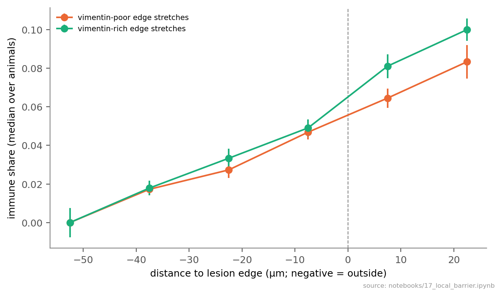

Beyond Boundaries — Methods and Results
Xenium multimodal cell-segmentation stains in mouse EAE spinal cord: what they add to the transcriptome, and what
they show about how lesions form, resolve or persist. Draft, 8 October 2026. Every number below is produced by the
notebooks named in brackets (notebooks/NN_*.ipynb); the running log is RESULTS.md.
Methods
1. Animals, disease models and clinical scoring
Two experimental autoimmune encephalomyelitis (EAE) courses from the RRMAP2 study were analysed (animal work, induction and scoring were done upstream; descriptions here follow the study metadata).
- Chronic EAE (MOG35–55 immunisation; adjuvant controls "MOG CFA", "CFA"; immunised pre-symptomatic animals "NONSYMPTOM"). Sacrifice stages: onset (OS1, d10–14, score 0.25–0.5), peak (PEAK1, d13–18, 2.5–3.25), chronic mild (MILD16 d27–28, MILD30 d43–50) and chronic severe (SEVERE16 d28–29, SEVERE30 d41). The 16/30 suffix is a cohort label, not the sacrifice day.
- Relapsing–remitting (RR) EAE (PLP139–151; adjuvant control "PLP CFA"). Stages: ONSET1 (d11–15), ONSET2 (d13), PEAK1 (d14–18), REMISSION1 (d20–25), PEAK2_MILD (d31), PEAK2 (d32–33), MONOPHASIC (never relapsed, d32–33), PEAK3 (d38–49), REMISSION2 (d42–47), REMISSION2_LONG (d48).
- Clinical scores and weights were recorded daily from d0 to sacrifice (up to d51;
data/clinical/Fixed_RRMap2_FinalSamples_All{Score,Weight}_curated_20260723_212152.xlsx). Per animal (scripts/clinical_metrics.py): onset day (first score > 0); first-attack peak (maximum within 10 days of onset) and its day; lowest score after the first peak (nadir); area under the score curve (trapezoid over scored days); maximum score; relapse seen (rise ≥ 1 after the nadir); maximum weight loss (% of d0). Name harmonisation: the five MILD30 animals areC_M30_kin the score sheet andC_L_kin the annotation; k = 1, 4, 5 match uniquely on sacrifice day and sex, k = 2, 3 (both d45, male, score 1) were paired by number. RR_MP_3 lacks a sacrifice score in the sheet; the annotation's 0.75 was used.
The statistical unit is the animal throughout. 67 animals are in the annotated object (chronic 34, RR 33): controls 13, onset 9, peak 19, chronic late 13, recovery 13.
2. Xenium data
- Runs. Five Xenium 5K runs (mouse 5K panel + 95 custom genes), fresh-frozen spinal cord, 0.2125 µm/px: run 1
(chronic, XOA 3.2), runs 2–3 (RR, XOA 3.2), runs 5–6 (both arms, XOA 4.0). 54 annotated images (sections); each image
holds 2–3 tissue pieces from different animals (
meta_sample_id= piece,sample_name= animal; every piece is one animal, no piece spans images). In runs 5/6 pieces are ≥ 326 µm apart; in runs 1–3 they often touch (closest cells of two pieces 6–30 µm apart in 8 images). - Segmentation-kit stains (Xenium Multimodal Cell Segmentation): ch0 DAPI; ch1 ATP1A1/CD45/E-cadherin (one channel); ch2 18S rRNA; ch3 αSMA/vimentin (one channel). Channel identity was verified from OME metadata and image content. Xenium segmented ~93–97 % of cells with the interior (18S) stain, 0.5–4 % with the boundary stain and 2–3 % by nucleus expansion. Vim, Acta2 and Atp1a1 are not on the panel.
- Annotation (upstream, curated): 1,384,881 cells; cell types at four levels (
Anno_L1_curated, 19 types;Anno_L2, 42); curated niche states (Curated_niche_state: Physiological, Lesion_active/progressive/mix/reactive, Meninges, Vasculature); anatomical regions (Global_anatomical_region). Expression: log-normalisedX, raw counts inlayers['counts']. Contaminating tissue and misassigned cells were removed upstream; analyses use annotated cells only. - Data transfer and integrity (runs 1–3). Images and masks (
morphology_focus/,cells.zarr.zip,cells.parquet,cell_feature_matrix.h5,experiment.xenium) were copied from the KI file share; transcripts were not copied (only needed for a QC-only autofluorescence mask). Every bundle was checked (scripts/check_bundle_integrity.py): CRC of everycells.zarr.zipentry, full reads of parquet/h5 files, decode of every full-resolution image tile; one file corrupted in transit was re-fetched and verified by MD5. All copied files were additionally compared by MD5 with the source.
3. Per-cell image features (scripts/01_extract_features.py, src/beyondboundaries/features.py)
For every segmented cell, 201 features were computed from the four full-resolution stain images and the Xenium cell
and nucleus masks, in 2048 × 2048 px windows with a 256 px (54 µm) halo so every cell is measured whole (tiling
invariance tested exactly; 0 truncated cells). Mask areas equal Xenium cell_area; centroids agree within 0.28 µm.
- Compartments: cell; nucleus; cytoplasm (cell − nucleus); rim (cell pixels within 1 µm of the cell edge); ring (non-cell pixels within 2 µm outside the cell, assigned to the nearest cell); territory (non-cell pixels within 10 µm, nearest cell: the cell's extracellular surroundings, e.g. neuropil).
- Intensity: mean, 50th/90th/99th percentile and sum per compartment and channel.
- Radial profile: mean intensity in 5 bins from cell centre to edge (by distance to the edge), ÷ the cell mean.
- Polarity: offset of the intensity-weighted centroid (intensity above the cell's 10th percentile) from the geometric centroid and from the nucleus centroid, ÷ equivalent radius; plus the x/y offset in µm (direction).
- Texture: Haralick features (contrast, homogeneity, angular second moment, entropy, correlation) from a symmetric grey-level co-occurrence matrix over 4 directions at 0.5 µm, 16 levels (per-cell 1–99 % rescaling), on the nucleus for DAPI and the whole cell for the other channels.
- Morphology: cell and nucleus area, perimeter, eccentricity, solidity, axes, orientation, circularity, nucleus:cell area ratio, nucleus offset.
4. Background and normalisation (src/beyondboundaries/background.py, notebook 02, scripts/02_normalise_all_runs.py)
- Low-resolution maps (pyramid level 3, 1.7 µm/px) per image: tissue mask (smoothed log(DAPI + 18S) above Otsu, holes filled, objects < 2 × 10⁴ µm² removed); cell-free tissue (tissue > 5 µm from any cell); local background per channel = Gaussian-weighted (σ 25 µm) mean of cell-free pixels (normalised convolution); distance to the tissue edge. An autofluorescence proxy (cell-free and transcript-poor) was used for QC only (runs 5/6).
- Normalisation of intensity features: x_norm = (x − local background) / s, with s = 90th percentile of the raw cell mean of physiological-niche cells in the same image (the staining/imaging unit). Ratio-type features (radial, polarity, texture, morphology) are unchanged. Per-piece scaling was rejected because piece-level intensity tracks disease (notebook 02). The all-runs table reproduces the runs 5/6 table exactly (max difference 0 over 500,379 cells).
- Robust within-image z (used for all cross-animal image readouts): z = (x − median) / (1.4826 × MAD) over all cells of that image (or of that cell type), so animals are compared only against cells stained and imaged with them.
5. What the stains add to the transcriptome (notebooks 03–09)
- Expectation tests (03): AUROC between expected-high and expected-low cell groups for six known stain patterns (VSMC αSMA; leukocyte vimentin; neuron/oligodendrocyte low ch3; ependymal vimentin; neuronal 18S; leukocyte CD45 at the rim), overall, per segmentation method and per animal.
- Orthogonality (04): per cell type (14 types with ≥ 500 cells and ≥ 5 animals; ≤ 30,000 cells per type; 18S-
segmented), 118 image features (rank-inverse-normal transformed within type) predicted by ridge regression
(
RidgeCV, α = 10⁻²…10⁴, per target) from technical covariates (image, spinal level, log transcripts, log area, log distance to tissue edge) with or without 50 transcriptome principal components (fitted inside each fold on log-normalised counts); 5-fold cross-validation grouped by animal; pooled out-of-fold R². The reverse direction (images → transcriptome PCs), lesion tests on residuals (per-animal shifts, BH-corrected) and Leiden clustering of residuals (resolution 0.3) followed. - Field vs cell (05): each cell's residual vs the mean residual of its 30 nearest cells of other types (shared local field); field vs lesion distance and local background. Animal level: leave-one-animal-out ridge (α = 10⁻¹…10⁵) predicting clinical score from per-animal transcriptome or image summaries (lumbar), permutation p (score labels shuffled).
- Targeted readouts (06–07): (i) astrocyte protein score (within-image z of αSMA/Vim cell mean + cytoplasm p90 − ATP1A1 rim) vs an RNA reactivity score (mean gene-wise z of C3, Gfap, Serpina3n, Cd44, Osmr, Timp1, Socs3, Serping1, H2-D1, Psmb8, Gbp2 minus Slc1a3, Kcnj10, Slc6a11, Fgfr3, Gjb6, Aldoc, Aldh1l1); quadrants of the top/bottom quartiles; (ii) polarity direction: cosine between a cell's 18S polarity vector and the direction to the nearest endothelial/VSMC cell (≤ 15 µm); (iii) 18S per cell type, lesion vs physiological, with and without adjusting for transcript density; (iv) neuropil index = raw ATP1A1 territory intensity ÷ the median of the same tissue piece and region class (WM or GM); lesion vs physiological paired within piece (Wilcoxon over pieces).
- Image-only prediction (08–09): gradient-boosted trees (
HistGradientBoostingClassifier, 300 iterations, learning rate 0.1, early stopping, balanced class weights) on image features only (cell features + means over the 15 and 50 nearest cells of 17 key features); 5-fold CV grouped by animal with balanced subsampling (≤ 3,000–8,000 cells per class). Targets: L1 type (14), L2 subtypes, anatomical region (10), lesion state, lesion vs physiological; per animal: clinical score and metadata. Transfer: train on one run, test on another (09); leave one run out over all five runs (13).
6. Control-referenced lesions and lesion states (notebook 10)
- Neighbourhood vector for every cell: its 30 nearest cells in the same tissue piece (including itself) described by (i) composition over 23 cell types/states (L2 where it carries disease state: microglia, monocyte-derived macrophages (MDM), border-associated macrophages, DC, NK/DC, T, B, neutrophils, homeostatic and reactive astrocytes, MOL, NFOL, disease-associated oligodendrocytes (DAO), OPC/COP, excitatory/inhibitory/cholinergic neurons, endothelium, VSMC, EAE-associated and other fibroblasts, Schwann, ependymal), (ii) the neighbourhood mean of seven gene programs (per-cell score = mean gene-wise z of log-normalised expression): lipid-associated myeloid (Trem2, Lpl, Cd36, Gpnmb, Igf1, Itgax, Cst7, Cd9, Plin2, Abca1, Ch25h, Msr1), MHC-II (H2-Aa, H2-Ab1, H2-Eb1, Cd74), interferon (Ifit1, Ifit3, Isg15, Irf7, Stat1, Oasl2), astrocyte reactivity (C3, Gfap, Serpina3n, Cd44, Osmr, Timp1, Socs3, Serping1), homeostatic microglia (P2ry12, Tmem119, Sall1, Cx3cr1, Siglech), myelin (Mbp, Mog, Mag, Cldn11, Mal, Opalin), ECM/fibrosis (Col1a1, Col1a2, Fn1, Tnc, Postn), and (iii) log cellularity (cells per 1000 µm² within the 30-cell radius).
- Reference and abnormality. Per region class (WM: WM + WM_Meningeal; GM: GM + dorsal + ventral horn; meninges), features were standardised by the control neighbourhoods (mean, SD floored at 0.02) and the squared Mahalanobis distance to the control cloud computed (Ledoit–Wolf covariance, ≤ 60,000 control cells). Calibration: each control animal was scored against the other controls; the lesion threshold is the 99th percentile of these held-out distances, so a new control animal is ~1 % lesion by construction. Cells in DRG, vasculature, central canal or unassigned regions were not scored.
- Lesion states. Ten interpretable axes, each a mean z against control neighbourhoods of the same region: infiltration (T, B, NK/DC, neutrophils), monocyte-derived myeloid (MDM, DC), lipid-associated myeloid program, MHC-II/IFN, astrocyte reactivity (program + reactive astrocyte share), oligodendrocyte disease state (DAO), myelinating-oligodendrocyte loss (MOL share and myelin program, sign flipped), microglia homeostasis loss (sign flipped), fibrosis (EAE fibroblasts + ECM program), cellularity. Lesion neighbourhoods were clustered by k-means (k = 6, 10 initialisations, fitted on ≤ 400,000 cells, arcsinh-transformed axes). States are named by the two axes that most distinguish them from the other states (profile z-scored across states).
7. Disease-course analyses (notebook 11)
Per animal: share of WM/GM/meningeal cells in each lesion state; composition (share of all cells per type; MOL per WM cell; neurons per GM cell); mean lesion axes in lesion tissue; image readouts (18S-segmented cells; cells < 20 µm from another tissue piece excluded): neuropil index (vs the piece's own non-lesion WM/GM), tissue vimentin (territory) and astrocyte vimentin (cell mean) as within-image z, myeloid 18S texture (GLCM correlation, within-image z); medians in lesion and non-lesion tissue (≥ 50 cells). Contrasts by Mann–Whitney U (descriptive), associations by Spearman ρ. B-cell aggregates: B cells with ≥ 5 B cells among their 15 nearest cells (same piece). Damage memory: per animal × lesion state readouts, peak vs recovery groups (≥ 3 animals each), Benjamini–Hochberg across tests.
8. Replication on runs 1–3 (notebook 13)
The same code on runs 5/6 (reproducing earlier numbers) and separately on runs 1–3: 18S texture vs score (per animal × section, lumbar, ≥ 30 cells per type, within-section centring; DAPI texture as control); WM neuropil loss (paired within piece, both lesion definitions; both neuropil references compared); astrocyte protein vs RNA (06 definitions); T-cell polarity towards vessels; leave-one-run-out image models.
9. Relapse lesion origin (notebook 14)
Lesion states grouped as active (S1, S4), old/late (S2), glial (S0) and other. Per animal: share of active cells with an old cell within 50 µm in the same piece, against a within-piece permutation null (state labels shuffled among the piece's lesion cells, 30 permutations; enrichment = observed ÷ expected); distance from active to nearest old cell; lesion objects (lesion cells linked when < 30 µm apart in a piece, ≥ 50 cells) and the share of active tissue in objects containing ≥ 10 % old tissue; location of active tissue; B-cell aggregates near old tissue; astrocyte vimentin at the active/old interface. First attack (RR and chronic PEAK1, 10 animals) vs relapse (PEAK2, PEAK2_MILD, PEAK3, 9 animals).
10. Vimentin: robustness, lesion edge, αSMA (notebook 15)
Effect = median per-animal value in the milder/resolving group minus the more severe/active group, for four contrasts (MILD16 vs SEVERE16; MILD30 vs SEVERE30; MONOPHASIC vs REMISSION1; chronic vs RR PEAK1). Tests: within-animal contrast (lesion − non-lesion astrocytes of the same animal); same contrast in DAPI, 18S and ATP1A1; astrocytes > 20 µm from endothelial/VSMC cells; astrocytes with no VSMC, endothelial or fibroblast cell within 20 µm; WM > 50 µm from the tissue edge; reactive astrocytes only; within each lesion state; lesion neurons and oligodendrocytes (negative controls); VSMC αSMA/Vim (calibrator); raw intensities within the four images that hold both MILD16 and SEVERE16 animals; piece sharpness (variance of the Laplacian of DAPI at 0.43 µm/px); smooth-muscle/contractile (Myh11, Tagln, Cnn1, Des, Mylk, Smtn), pericyte (Pdgfrb, Kcnj8) and fibroblast (Postn, Col1a1) transcripts in lesion astrocytes; per run. A first edge profile used a cell-based signed distance (inside: distance to the nearest non-lesion cell; outside: minus the distance to the nearest lesion cell). It is superseded by the region-based profile (section 11), because with a cell-based distance "just inside the edge" mostly means isolated lesion cells in healthy tissue.
11. Lesion regions, vimentin location and containment (notebook 16)
Lesion regions (used for all lesion-level results): per tissue piece on a 10 µm grid, the share of control-referenced lesion cells among the cells of each grid square, smoothed (Gaussian σ = 15 µm, density-weighted), thresholded at 0.5 within tissue, holes filled; connected regions ≥ 0.005 mm² with ≥ 100 cells and ≥ 30 cells within 50 µm outside (356 regions in 53 animals; median 96 % lesion cells inside). Each cell gets a signed distance to the nearest region edge (distance transform; + inside, − outside), and cells ≤ 50 µm outside are assigned to the nearest region. Depth from the cord surface: the piece's tissue (grid squares with cells, closed by 30 µm, holes filled), largest connected component = cord (drops detached roots and meninges), distance to its outline. Per region: border tissue and astrocyte vimentin (−30…+30 µm), edge spike (tissue vimentin 0–10 µm inside minus the mean of −30…−10 µm and +20…+45 µm), active share (S1 + S4), infiltrating immune share (T, B, NK/DC, DC, MDM, neutrophils; not microglia) 0–50 µm outside, and escape = log₂(that share ÷ the animal's immune share > 150 µm from any region). Vimentin location: profiles of astrocyte and territory vimentin against the region-edge distance (bins −150…+300 µm, median of per-animal medians, ≥ 15 cells per bin); per animal, astrocyte vimentin inside regions minus outside (> 60 µm away). Containment test: for animals with ≥ 5 regions, Spearman ρ between border vimentin and escape across their regions after regressing out log size, active share and log depth; Wilcoxon signed-rank of per-animal ρ against 0; deep regions (> 100 µm) separately. A first version used cell-linkage objects (lesion cells < 30 µm apart); many were diffuse scatters without a real outline and its tissue-mask depth was wrong next to roots and meninges, so its results are withdrawn.
12. Local barrier tests (notebook 17)
Border segments: the ±30 µm edge band of each lesion region cut into 100 µm × 100 µm segments with ≥ 5 cells just inside (0–30 µm) and just outside (0–30 µm); regions with ≥ 3 segments (3,188 segments, 392 regions, 53 animals). Per segment: astrocyte vimentin (primary; cell-intrinsic) and territory vimentin (secondary; also includes leukocyte vimentin), immune share inside, 0–30 µm and 30–60 µm outside, active share inside, log depth. Variables centred within each region (region fixed effect); per animal, partial Spearman ρ between vimentin and outside immune share adjusting for inside immune share, active share and depth (≥ 6 segments); Wilcoxon of per-animal ρ; bootstrap 95 % CI of the median (animals resampled, 5000×). Old lesions at relapse (PEAK2, PEAK2_MILD, PEAK3): 100 µm patches with ≥ 10 old (S2) cells; vimentin of the old tissue (S2 astrocytes; S2 territory) vs the active (S1/S4) share among cells within 60 µm, centred within region, per-animal partial ρ adjusting for log depth and log old-cell count.
13. Strength of the vimentin–outcome association (notebook 18)
35 post-peak animals with ≥ 30 lesion astrocytes. Measure: median astrocyte vimentin (within-image z) inside lesion regions minus the same animal's astrocytes > 60 µm outside. Partial Spearman ρ with the clinical score at sacrifice (residuals after linear adjustment for days since the first peak, first-attack height, arm, run (one-hot), lesion share, or RNA astrocyte reactivity (reactive − homeostatic gene z, lesion astrocytes)); leave-one-run-out; within lesion states (≥ 20 astrocytes of that state); within-image pairs (all pairs of post-peak animals sharing a Xenium image with different scores; sign test over animal pairs).
14. Software and statistics
Python 3.12.14; numpy 2.2.6, pandas 2.2.3, scipy 1.15.2, scikit-learn 1.7.2, anndata 0.12.19, scanpy 1.11.5,
scikit-image 0.25.2, tifffile 2025.10.16, zarr 2.18.7, matplotlib 3.10.9 (environment.yml). Notebooks are paired
jupytext scripts (notebooks/py/). Tests are two-sided; with 2–19 animals per group, p values are descriptive and the
evidence for a finding is its consistency across independent contrasts. Benjamini–Hochberg where a family of tests
was screened. Small-group contrasts are reported with every animal shown.
Results
A. What the segmentation stains add to the transcriptome
The stains measure what they claim, except CD45. Known patterns appear in every animal: ependymal vimentin (AUROC 0.86), neuronal 18S (0.78), neuron/oligodendrocyte low ch3 (0.74), leukocyte vimentin (0.73), VSMC αSMA (0.66), also in boundary-segmented cells. Leukocytes are not brighter at the rim in the boundary channel (0.48), even where neuropil is dimmest: in mouse spinal cord that channel reports ATP1A1 only [03].
Most of each image feature is not explained by the transcriptome, but most of that is optics. Covariates plus transcriptome explain a median 11–18 % of image-feature variance per cell type (transcriptome-unique 6–10 %; best morphology, nucleus:cell ratio ΔR² 0.40–0.47). The remainder is spatially coherent but largely a local field shared by all cell types (r ≈ 0.38 for rim/cytoplasm/nuclear intensity) that follows local background, not lesions; the cell-specific remainder shifts with lesion state in 19/924 tests (~0.1 SD); residual clustering finds no discrete hidden states [04–05].
Images alone recognise cells and map lesions, on unseen runs. Without transcripts, held-out animals: cell type 46 % balanced accuracy (14 types, chance 7 %; ependymal 0.86, neuron 0.81, immune cells poor without CD45), subtypes (microglia 72 %, reactive astrocytes 68 %), anatomy 63 % (images add to the transcriptome, 0.68 → 0.73), lesion maps AUROC 0.90. Models trained on other runs work on every held-out run (lesion AUROC 0.85–0.91, cell type 0.42–0.47), across five runs, three batches and two analysis-software versions, even though images identify their run with 100 % accuracy [08, 09, 13].
Biology only the images show (replicated in runs 1–3 unless stated) [06, 07, 13]: - White-matter neuropil loss: lesion WM has less surrounding ATP1A1 than physiological WM of the same piece (×0.79 in runs 5/6, ×0.72 in runs 1–3, 58 pieces, p < 10⁻⁴); grey matter ~unchanged. - Astrocyte reactive RNA precedes vimentin protein: protein vs RNA ρ 0.46–0.58 per run; "RNA-only" astrocytes are more common in active disease than in recovery (runs 1–3 0.076 vs 0.046, p = 0.01; runs 5/6 0.111 vs 0.071, p = 0.02). - Perivascular T cells orient their 18S-rich cytoplasm towards the vessel (cos 0.14 runs 5/6; 0.19 runs 1–3, 33 animals, p < 10⁻⁴); also fibroblasts, macrophages, microglia; not neurons. - 18S rises beyond RNA content in activated lesion cells (Schwann +0.8, endothelium +0.4 SD). - 18S texture vs severity replicates only in astrocytes, myeloid cells and oligodendrocytes (within-section ρ 0.54–0.76), not endothelium, fibroblasts or neurons; downgraded from candidate biomarker.

Lesion maps from images alone (held-out animals) next to the transcriptome-defined lesion niches.B. Lesions redefined against control tissue
The curated niche labels call 4–20 % of never-immunised control tissue "lesion" (almost all "Lesion_mix"). With the control-referenced definition, controls are 0.3–2.4 % lesion (MOG-CFA and PLP-CFA alike), and 72 % of cells labelled Lesion_mix look like control tissue. Lesions do resolve: median lesion share RR PEAK1 0.93 → REMISSION1 0.53 → MONOPHASIC 0.35 → REMISSION2 0.30 → REMISSION2_LONG 0.14; chronic PEAK1 0.87, SEVERE16 0.52, MILD16 0.28 [10].
Six lesion states [10]: S1 monocyte-derived myeloid (active; ~35 % of tissue at PEAK1/PEAK2, ~0 in long remission); S4 monocyte-derived + oligodendrocyte damage (peak); S2 fibrosis + myelinating-oligodendrocyte loss (late: SEVERE30 20 %, MILD30 13 %, REMISSION2 12 %); S0 astrocyte reactivity + DAO (persists after peak); S3 astrocyte reactivity + MHC-II; S5 lymphocytic infiltration. The course runs from active infiltrate to fibrotic, demyelinated and glial-reactive tissue.

Lesion states in one representative animal per stage (median lesion share of its stage, largest piece).C. Lesion vimentin and outcome
Astrocyte αSMA/vimentin inside lesions (within-image z) is higher in the milder or resolving group in every contrast: MILD16 vs SEVERE16 2.3 vs 0.7 (same images), MILD30 vs SEVERE30 4.4 vs 2.0, MONOPHASIC vs REMISSION1 3.3 vs 1.1, chronic vs RR PEAK1 2.6 vs 0.2 (p = 0.04), and within the glial state from peak to recovery 0.16 → 1.14. Among the 13 chronic-late animals it correlates with the clinical score (ρ = −0.80), partly a run artefact (MILD30 is run 1 only) [11, 12].
Strength of the link with outcome [18]. Across 35 post-peak animals, lesion vimentin (inside − outside) vs clinical score: ρ −0.34 (p = 0.046), −0.44 adjusted for days since the first peak (p = 0.008); stable when each run is left out (−0.42 to −0.55), within lesion states (S0 −0.49, S2 −0.56, S1 −0.45, S4 −0.41), and beyond RNA astrocyte reactivity (vimentin | RNA reactivity ρ −0.63, p < 0.001; RNA reactivity itself +0.29). Adjusting for lesion share (−0.26, n.s.) or first-attack height (−0.29, p = 0.09) weakens it, and in pairs of animals imaged together the worse animal has less vimentin in 12 of 19 pairs (p = 0.36). The apparent non-replication in runs 1–3 reflects no score variance there (MILD30 all 1.0; RR runs 1–3 ρ −0.46). Overall: moderate support, entangled with disease burden.
Not technical, not αSMA [15]. The effect keeps its direction in all four contrasts within animals (lesion − non-lesion astrocytes: +1.10, +1.09, +3.31, +0.40), far from vessels, with no VSMC, endothelial or fibroblast cell within 20 µm (+0.78, +1.21, +2.22, +0.96), in deep white matter, in reactive astrocytes only and within lesion states. Controls stay near zero: DAPI (−0.21…0.00), lesion neurons and oligodendrocytes, piece sharpness, and smooth-muscle, pericyte and fibroblast transcripts in the lesion astrocytes (no sign of αSMA-cell contamination). The VSMC calibrator is also higher in the milder group for MILD16 vs SEVERE16 (+1.16) and chronic vs RR (+0.91), so part of those two raw differences may be channel brightness; the within-animal contrast removes it, leaving chronic vs RR as the weakest contrast (+0.40). MILD30/SEVERE30 and MONOPHASIC/REMISSION1 have flat calibrators.
Vimentin fills lesions; there is no ring [16]. Against distance to the edge of lesion regions, vimentin rises on entering a lesion and stays high through the interior, with no edge peak. Astrocyte vimentin inside lesion regions minus the same animal's tissue outside: PEAK1 0.60; MILD16 2.27 vs SEVERE16 1.01; MILD30 3.30 vs SEVERE30 2.07; MONOPHASIC 4.28 vs REMISSION1 1.26. Vimentin marks a lesion-wide astrocyte response that is low at peak and strongest in animals that recover. (A first, cell-based edge profile [15] showed an apparent ring; it was an artefact and is withdrawn.)

Vimentin against distance to the edge of lesion regions (negative = outside), median over animals per group.
The vimentin effect under each technical test; controls and calibrators should sit near zero.D. Does a vimentin scar contain lesions?
A collaborator's hypothesis was that a successful astrocyte scar restricts immune infiltration. With lesion regions, lesions with more border vimentin have neither fewer nor more infiltrating immune cells around them than other lesions of the same animal (median ρ 0.00, p = 0.65, 36 animals; deep regions ρ −0.39, n.s., 10 animals). Border vimentin does not clearly rise from the chronic peak to MILD16 (0.67 → 0.50) and is lowest in SEVERE16 (0.02). Where vimentin is bright it fills the lesion rather than lining it, so the data neither support nor refute containment [16]. A first version with cell-linkage objects suggested more immune cells around better-bordered lesions and a border built by day 30; both were artefacts of diffuse objects and are withdrawn.

Eight random lesion regions from day ~30 animals: αSMA/vimentin (magma), region outline (cyan), infiltrating immune cells (red).Sharper within-lesion tests find no barrier [17]. Lesion edges cut into 100 µm stretches (3,188 stretches, 392 lesions, 53 animals) and compared within the same lesion: astrocyte vimentin of a stretch vs immune cells just outside, adjusted for the immune load inside, activity and depth, gives median per-animal ρ +0.035 (95 % CI −0.016 to +0.073; a barrier would give ρ < 0). Vimentin-rich stretches have more immune cells inside the edge and the same outside. In relapse animals, vimentin-rich old fibrotic tissue has as much new active tissue next to it as vimentin-poor old tissue of the same lesion (ρ −0.02, p = 0.36). At this resolution vimentin is a marker of the resolution phase, not a measurable barrier to infiltrating immune cells.

Immune share across the lesion edge for vimentin-rich vs vimentin-poor stretches of the same lesions.E. Chronic severity: lesions that stayed active
Severity is set at the first attack: all SEVERE animals peaked at 3.5 and never fell below 2.25; MILD peaked 1.5–2.5 and partly recovered. At d27–41 severe animals still carry more lesion (0.52 vs 0.28; 0.42 vs 0.30), more active states (S1, S4), T cells and cellularity, and fewer myelinating oligodendrocytes in WM (0.08 vs 0.15 per WM cell); neuropil is not lost more. Across 13 chronic-late animals the score correlates with low lesion vimentin (ρ −0.80; partly run-confounded), lesion share (0.58), T cells (0.47) and cellularity (0.38) (run 5 alone: inflammation 0.77–0.89). The tissue-loss hypothesis is not supported [11, 12].
F. Relapse
Not predictable clinically: monophasic first peaks 2.25–2.75 vs relapsers 2.5–3.0, similar onset, weight loss and early nadir. B cells: RR animals accumulate B cells after the first attack (per 1000 cells: PEAK1 14 → REMISSION1 22 → PEAK2_MILD 25 / PEAK3 19), increasingly in aggregates (0.26 → 0.55) and in the meninges (0.16 → 0.58–0.90). Never-relapsing animals have fewer than REMISSION1 animals (9 vs 22, p = 0.03), recovered further after the first attack (nadir 0.25 vs 0.75, p = 0.03) and carry more lesion vimentin. The chronic arm has ≤ 8 B cells per 1000 throughout [11, 12].
New lesions, with flaring at old borders [14]. At relapse, active tissue touches old fibrotic tissue far more than at the first attack (active cells within 50 µm of old tissue 0.23 vs 0.05, p = 4 × 10⁻⁴; median distance 101 vs 265 µm), but active and old tissue still form separate patches (enrichment vs permutation 0.33 vs 0.14, both < 1). Relapse animals have more lesion objects (17 vs 8, p = 0.01) and only 19 % of active relapse tissue is in objects containing old tissue (0 % at the first attack). B-cell aggregates at relapse sit near old tissue (0.72 vs 0.31) and in the meninges (0.33 vs 0.05). No vimentin signature at the active/old interface. Caveat: S2 also forms a thin pial rim at the first attack (1.7 % of lesion tissue).
G. Chronic vs RR at the same peak
Both PEAK1 (d13–18, score ~3): RR lesions are more monocyte-derived with oligodendrocyte damage (S4 0.26 vs 0.17, p = 0.01) and less lipid-laden (5.4 vs 9.1, p = 0.01); RR animals have more B cells (14 vs 3 per 1000) and more weight loss (22 vs 14 %); chronic lesions show more astrocyte vimentin. Arms differ in antigen, likely strain and run, so these are descriptive [11].
H. Damage memory
Within the same lesion state, from peak (19 animals) to recovery (13), neuropil trends back towards normal (S1 0.79 → 1.03; S5 0.88 → 0.99, p = 0.02) while vimentin rises (glial S0/S3 tissue vimentin p = 0.009/0.005; best q = 0.13). Lesions that persist into recovery look repaired in neuropil but scarred in vimentin [11]. (This readout pools WM and GM; WM lesions alone stay below 1 [13].)
Limitations
- Small groups (2–19 animals) and a cross-sectional design: temporal statements ("precedes", "builds", "resolves") are inferred from animals sacrificed at different times.
- The two arms differ in antigen, likely mouse strain, and Xenium run; MILD30 is run 1 only; MONOPHASIC and REMISSION1 never share an image (handled with within-image z, within-animal contrasts and normalised displays).
- Lesion calls and states are transcriptome-defined; image readouts are independent measurements on top.
- αSMA and vimentin share one channel (tests in [15] find no αSMA contribution in astrocytes, but a validation stain with separate antibodies would settle it); CD45 is undetectable; 18S drew ~95 % of the masks, so 18S distribution features are partly by construction.
- In runs 1–3 tissue pieces touch; cells < 20 µm from another piece are excluded from image readouts, and spatial computations are done within pieces.